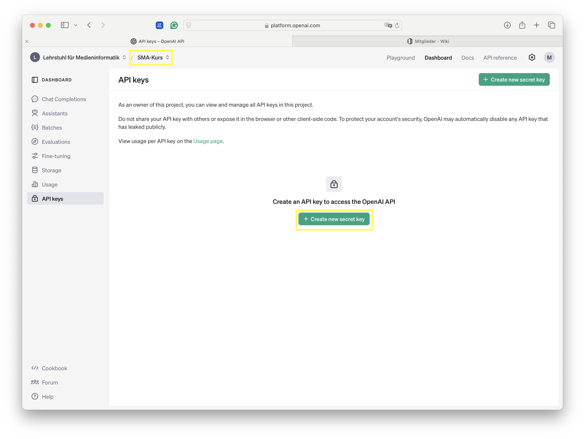
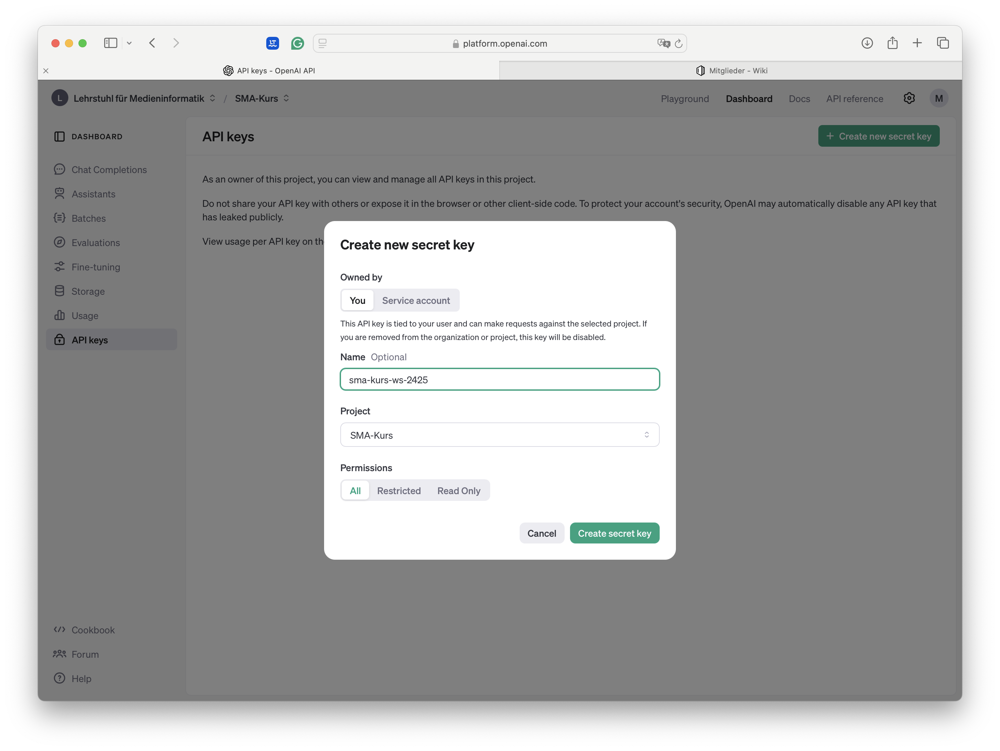
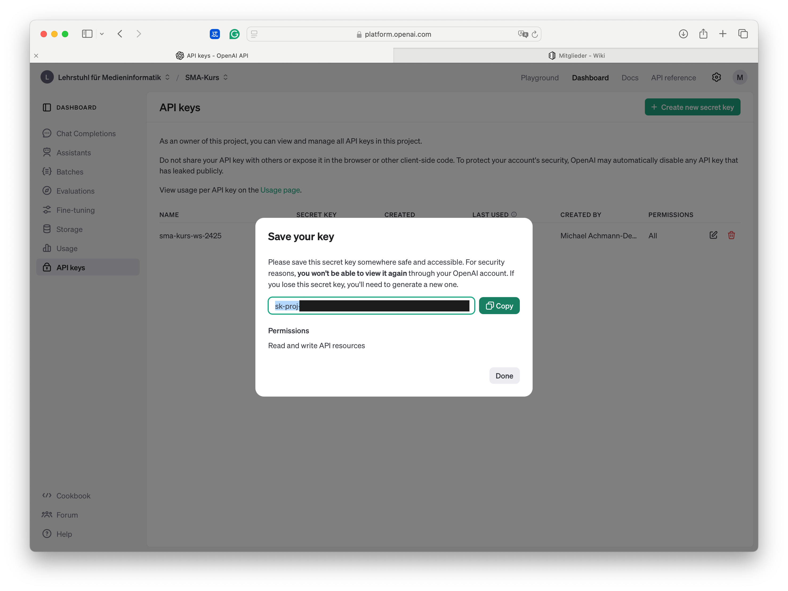
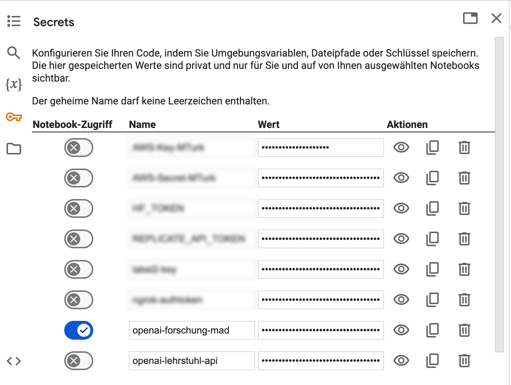
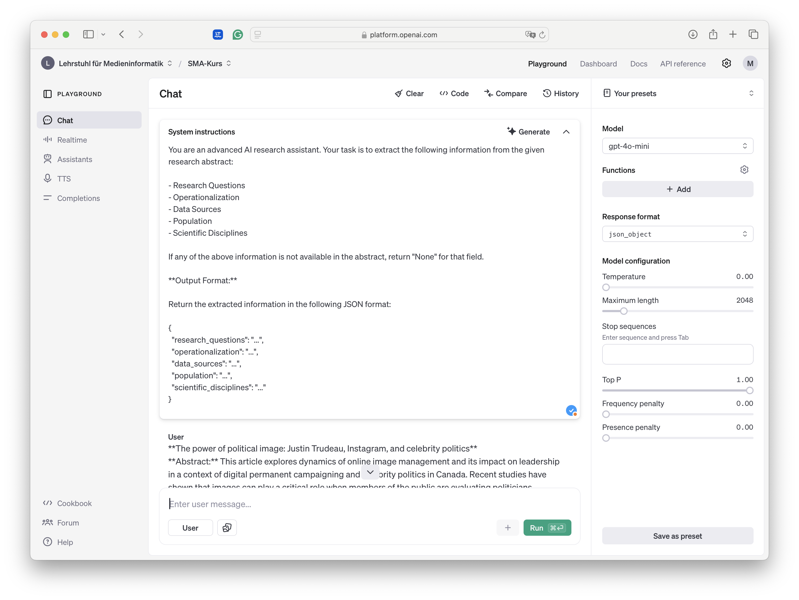
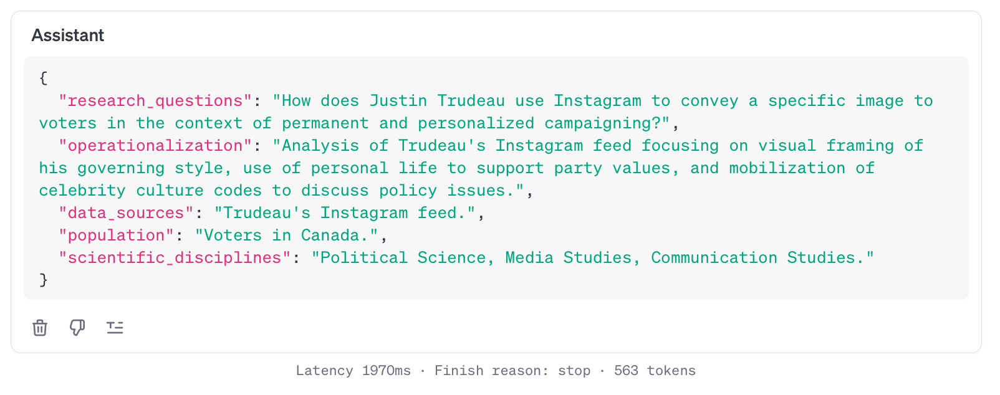

Basics for OpenAI
![]()
This guide is designed for master’s students who are beginning to explore OpenAI’s tools and APIs. In this first section, I’ll cover the essential step of creating an API key, which serves as your access point to OpenAI’s language models. An API key will enable you to interact with OpenAI’s API, allowing for experiments, research applications, as you advance through our seminar
Creating an API-Key
Everyone has been invited to our OpenAI organization. To be able to use the API, we need to generate an API-Key. First, log into the OpenAI Dashboard. Next, select our project SMA Kurs. This is important to track all costs related to this seminar. Click on the API Keys menu item and Create new secret key (see images below).



The key, usually starting with sk-proj..., is your form of authentication for each and every request on the OpenAI / GPT API. Keep it safe and be be careful not to leak the key! Each and every use of the key costs money! As a safeguard against accidentally leaking the key, we use the Colab Secrets feauture. Paste your secret into a new secret and name it.

Later on, when initiating the client(), we will refer to the secrets rather than pasting the key into our notebook:
import openai
from google.colab import userdata
# Fetch the API key from Colab
api_key_name = "openai-forschung-mad"
api_key = userdata.get(api_key_name)
# Initialize OpenAI with the provided API key
client = openai.OpenAI(api_key=api_key)Colab will ask for your permission when using the notebook for the first time. Always take a moment to breath and think before granting access to your secrets!
Playground
The OpenAI Playground is a useful place for (qualitative) experiments with the GPT family. We can set System Prompts and add zero to many user messages, including images. Additionally, we can control parameters, like temperature, or response_format. The sceenshot below showcases the Literature Review prompts in the playground.


üöß Future Work Checklist üöß
Over the course of our semester I will gradually add more steps to this guide. See current checklist below:
See Also
Reuse
Citation
@online{achmann-denkler2024,
author = {Achmann-Denkler, Michael},
title = {Basics for {OpenAI}},
date = {2024-10-28},
url = {https://social-media-lab.net/basics/openai.html},
doi = {10.5281/zenodo.10039756},
langid = {en}
}